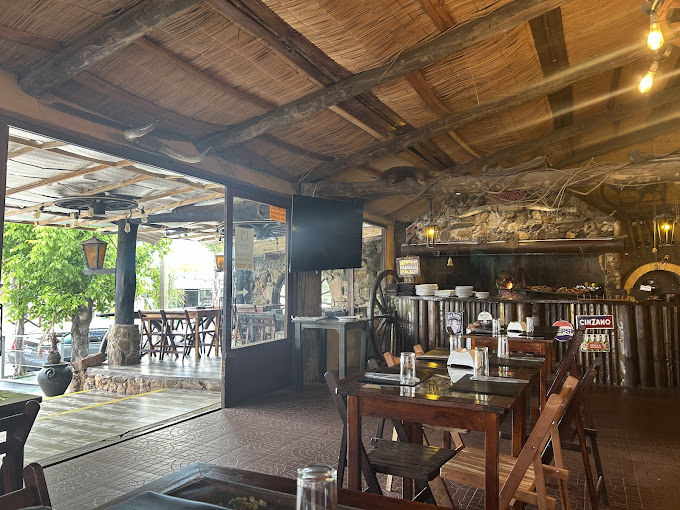
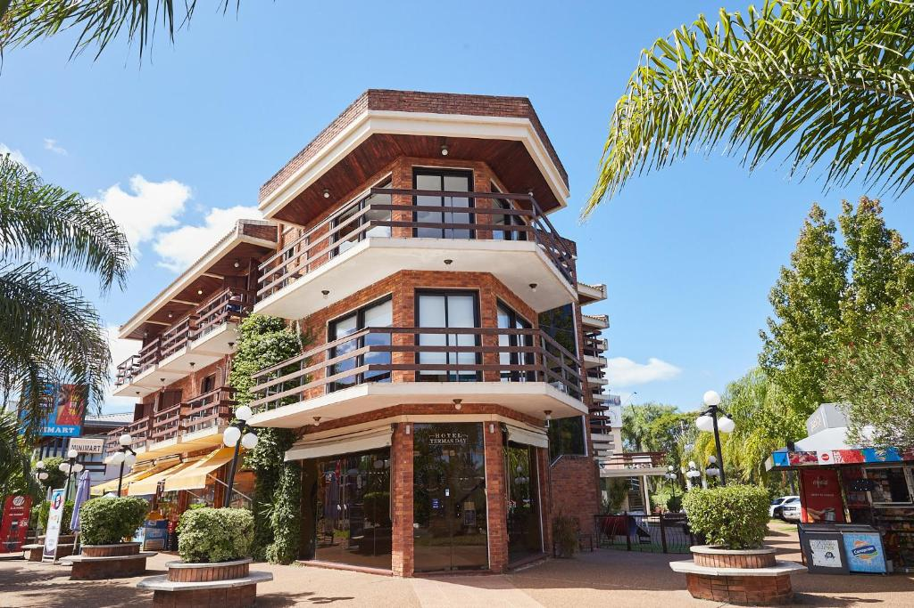
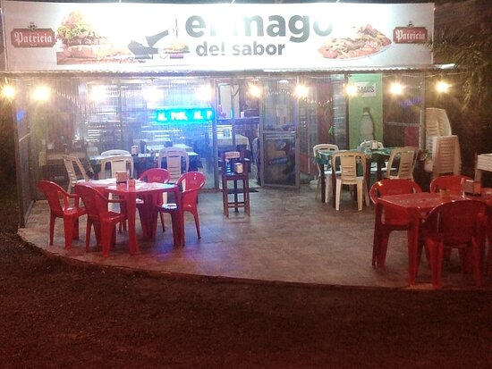
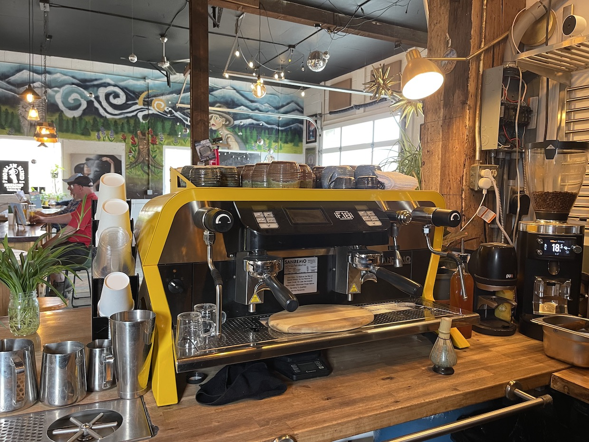

ParrillaEl Fogón de Mandinga
Parrilla con asientos al aire libre, chimenea y menú para niños.
Jacarandá, Termas del Daymán · 093 784 334
Visitar en mapa SIGTURSalto te espera con termas, costas y una calidez que se siente en cada rincón. Encontrá el alojamiento ideal, los sabores típicos de la zona y todo lo que necesitás para vivir la ciudad a tu manera.
Cargando una curiosidad local...



Salto creció a la vera del río Uruguay y de sus aguas termales, transformándose con el tiempo en uno de los destinos turísticos más visitados del interior del país. Hoy combina tradición, naturaleza y gastronomía en una propuesta que invita a quedarse más de un día.

ParrillaEl Fogón de Mandinga
Parrilla con asientos al aire libre, chimenea y menú para niños.
Jacarandá, Termas del Daymán · 093 784 334
Visitar en mapa SIGTUR
RegionalEl Mago del Sabor
Opciones regionales con asientos al aire libre, ideal después de las termas.
C. 14, Termas del Daymán · 099 463 336
Visitar en mapa SIGTUR
CaféBasalto Coffee Club
Cafetería de especialidad y opciones para llevar.
Gral. Fructuoso Rivera 690, Salto · 092 234 916
Visitar en mapa SIGTUR